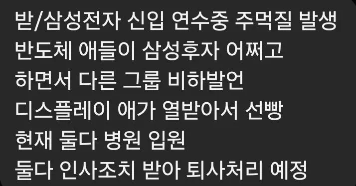
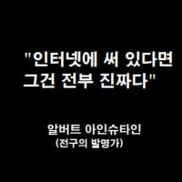

올해초에 메모리 신입이 파운드리 선배에게 '징징대지 말고 나가라' 라고
사내망에 쓴거 있어서 진짜 같기도 하고 ㅋㅋㅋ

올해초에 메모리 신입이 파운드리 선배에게 '징징대지 말고 나가라' 라고
사내망에 쓴거 있어서 진짜 같기도 하고 ㅋㅋㅋ
지금이 3급 SVP 할 시즌인가; 4급 5급도 SVP하나...
저러면 결국 더 손해 보는건 가질게 많은 애인데 생각이 짧네 ㅋㅋ
원래 전자/후자 얘기는 후자들이 자조 섞어 푸념하는거지, 다같이 있을 때 전자들은 언급하면 안되는게 룰이었다고. 안 그래도 예민한 MZ들인데 성과급 앞둔 시점에 그걸 전자가 말하는 건 선 넘은거지..
아니 시벌 같은 계열사라도 다른 회산데 그걸 왜 부러워하지? 병신들임? 간호사가 의사 월급 많다고 부러워하는거랑 뭐가 다름?
의사도 간호사한테 와서
느그 월급 ㅈ나적지? 난 연봉3억이다~~이러면 논란될것같은데요
ㅋㅋㅋㅋㅋㅋㅋㅋㅋㅋㅋㅋㅋㅋ 직관하면 진짜 웃기겠다 ㅋㅋㅋㅋㅋㅋㅋㅋㅋㅋㅋ
글을 못읽니...?
같은 회사 안에서 사업부가 다른거야...
아니 회사가 다른거야
아 합쳐졌었지
능지가 이렇게 떨어질수가 있나 ㄷㄷㄷ
흑인한테 n.igga 박은거임 ㅋㅋㅋㅋ
구라로 밝혀짐…
재미없어졋네..
이제 막 입사해서 기업의 성장에 어떠한 기여도 없는 새끼가 저지랄 ㅋㅋ
후장이었으면 사내연애인데 까비


삼성후자ㅋㅋ
그리고 애초에 디플이 뭔 후자임 ㅋㅋㅋ 전자 후자 타령하는거 원래 삼전 내에서 DX가 천룡인이라 깔때 전자 후자 거렸던거지
그것도 맞는데, 예전에는 에스원처럼 계열사 중에서도 연봉 작은 곳들을 후자라 부르기도 했어.
계열사로 따지면 모르겠네 여튼 주작썰이긴하지만 디플형들이 후자소리 들을 곳도 아니라는거지 ㅋㅋ
후자 맞지 않나? 전자는 아니잖아.
퍼포먼스에 걸맞는 대우를 못 받긴해도 디플이면 삼성계열사 중에 티어1에서 1.5에는 들지
캬 입사만으로 영익 100조정도 벌어다 줬나봐~
삼성이 시험이나 학벌 등등 보고 거리지만 일하는 인간들이 ㅈㄴ 많으니 없을거같지도 않음
하이닉스 연수원에서도 몇명 술먹고 잘렸던데ㅋㅋ
현대차그룹도 뭐
현대차에선 그룹사 친구들보고, 하청업체 애들이라고 하다가 분위기 싸해지는 경우 많지ㅋㅋ
근데 성과급 얘기나오기전부터 삼성은 내부적으로 진짜 콩까루 집안임. DX DS사이도 안좋은데 DX는 내부 MX VD DA 네트워크 끼리도 사이 안좋음. 그냥 서로 못죽여서 안달임
전시한번 해보고 진짜 이새끼들은 사람새끼들이 아니구나 라고 생각함
반도체 직원은 피눈물? ㅋㅋㅋㅋ
이제 신입 연수도 따로 받아야할듯?